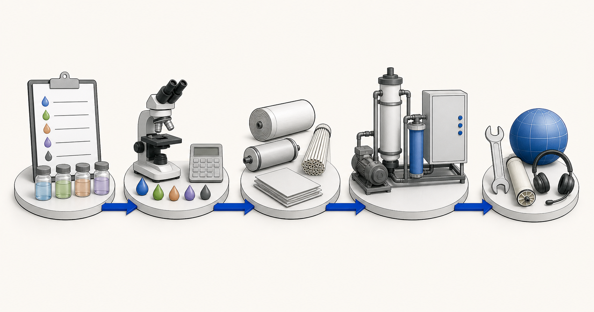

Реверзна осмоза (__ЗКСК06__)
__ЗКСК06__ се узима у обзир када је потребна велика редукција растворене соли или вода више чистоће. Хемија хране, притисак, предтретман и услови концентрата дефинишу практичну границу.
__ЗКСК00__ је __ЗКСК03__ дистрибутер и дистрибутер мембрана. Снабдевамо мембранске материјале за стамбене, комерцијалне и индустријске пројекте и пружамо техничку подршку за пратећу опрему. Овај центар објашњава категорије и апликације мембрана без тражења од купаца да изаберу модел производа. Тренутни извештај о води или процесној течности, циљ третмана и оперативни сажетак су на првом месту.

Категорије мембрана описују улоге раздвајања. Они нису замена за извештај о води или коначну материјалну препоруку.
__ЗКСК06__ се узима у обзир када је потребна велика редукција растворене соли или вода више чистоће. Хемија хране, притисак, предтретман и услови концентрата дефинишу практичну границу.
__ЗКСК07__ може подржати селективно отопљене врсте и органско одвајање. Морају се навести задржани и прожимајући циљеви, пХ, температура и услови чишћења.
__ЗКСК08__ и __ЗКСК04__ улоге се обично фокусирају на суспендовани, колоидни и биолошки материјал. Они могу бити коначне баријере или предтретман пре строжих фаза мембране.
Примене морске и боћате воде захтевају преглед салинитета, јона, температуре, уноса, предтретман и опреме под високим притиском пре избора материјала.
Почните од извора и намераване употребе. Сваки пут води до контролне листе извештаја и техничке дискусије, а не до аутоматског избора модела.
Прегледајте салинитет, јоне, температуру, варијабилност уноса, биолошки ризик, ограничења циљаног пермеата и концентрата.
Проверите тврдоћу, алкалност, силицијум диоксид, гвожђе, манган, гасове, салинитет и локално релевантне загађиваче.
Потврдите средства за дезинфекцију, органске материје, тврдоћу, циљеве укуса, потребан учинак и даље коришћење.
Опишите процес производње, варијабилност, органске материје, уља, метале, чврсте материје, одредиште поновне употребе и руковање концентратом.
Обезбедите потпуну равнотежу јона, мање ризике од обима, органске материје, варијабилност и предвиђену улогу мембранског корака.
Наведите комплетан састав и циљ раздвајања. Подршка мембранским материјалом није обећање комплетног процеса екстракције или резултата опоравка.
Дефинишите задржане компоненте, циљеве квалитета производа, санитарне услове, пХ, температуру, чишћење и захтеве за доказима.
Ускладите улазну воду, потражњу, притисак, архитектуру пречистача, предтретман и приступ замјени, а не ознаку капацитета.
Садржај веб странице пружа техничко образовање на нивоу категорије. Пре доношења коначних одлука о материјалу, опреми или перформансама потребан је комплетан извештај и потврђени оперативни сажетак. __ЗКСК00__ не тврди да производи __ЗКСК03__ мембране и не обећава проток, опоравак, животни век, селективност или резултате пројекта за непрегледани ток.
Сазнајте како хемија напојне воде, циљеви третмана и услови рада воде избор између категорија мембрана __ЗКСК06__, __ЗКСК07__ и __ЗКСК08__.
Прочитајте водич →Разумети податке из извештаја, питања претходног третмана и опреме која долазе пре препоруке за мембрану за морску или бочату воду.
Прочитајте водич →Планирајте третман мембране подземних вода и бунара на основу комплетне анализе минерала, метала, гасова, органских материја и оперативних циљева.
Прочитајте водич →Погледајте како историја отпадних вода, циљеви поновне употребе и ризици претходног третмана одређују улоге __ЗКСК08__, __ЗКСК07__ и __ЗКСК06__ у пројекту индустријске поновне употребе.
Прочитајте водич →Припремите потребне информације о хемији, варијабилности и циљевима процеса пре него што разговарате о мембранским материјалима за отпадну воду високог салинитета или подршку у вези са __ЗКСК05__.
Прочитајте водич →Научите који су састав и подаци о циљевима процеса потребни пре него што разговарате о __ЗКСК07__, __ЗКСК06__ или __ЗКСК08__ мембранским материјалима за слану воду и течности везане за литијум.
Прочитајте водич →Изаберите стамбене и лако комерцијалне __ЗКСК06__ мембранске материјале на основу квалитета воде, дневне потражње, компатибилности опреме и услова рада, а не на етикети модела.
Прочитајте водич →Схватите како активни угаљ може да подржи контролу оксиданата и органских састојака пре __ЗКСК06__, и зашто избор угљеника и даље зависи од анализе воде и услова система.
Прочитајте водич →Схватите како активни угаљ може да подржи контролу оксиданата и органских састојака пре __ЗКСК06__, и зашто избор угљеника и даље зависи од анализе воде и услова система.
Прочитајте водич →Званични линк је дат као примарна референца за тренутне категорије мембрана и документе. Информације о производу се могу променити, тако да се тачан материјал и актуелни званични документ потврђују током техничког прегледа. Vontron official industrial membrane overview · Vontron official UF membrane overview
Зато што називи извора и ТДС не описују све ризике од скалирања, загађивања, компатибилности и циљаног третмана.
Не. Помаже купцима да припреме тачне информације; коначна препорука следи извештај и преглед радног стања.
Да. Главна понуда су мембрански материјали, са одговарајућом подршком за предтретман, кућишта, пумпе, филтрацију, контроле, упутства за пуштање у рад и планирање замене.